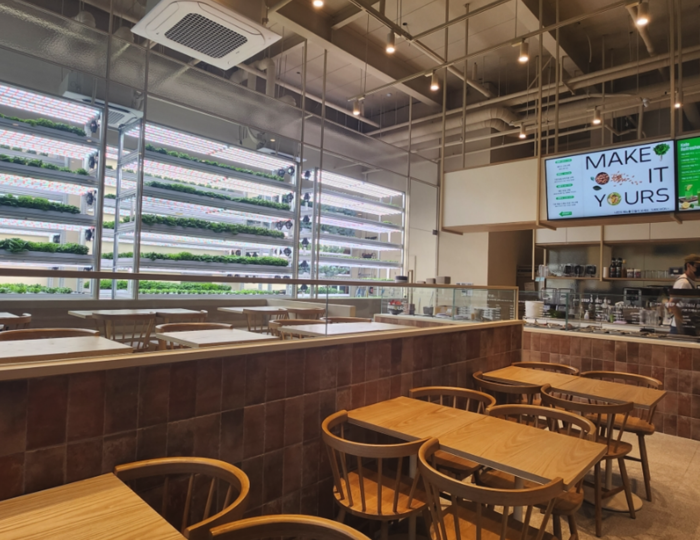

- livfarm Bangbae
- livfarm Gyodae
- Plant Segok
서울시 서초구 방배로 105에 위치한 스토어로써,
방배역 인근에서도 우리의 스마트팜 기반 샐러드 가게를 만나보세요! 이 매장은 또한 혁신적인 농작물 관리 기술과 최상의 신선함을 제공하며, 지역 사회의 건강한 라이프스타일을 지원합니다. 방배역 가까이에서도 같은 엄선된 재료와 다양한 맛의 샐러드를 즐길 수 있습니다. 최신 스마트팜 기술을 활용하여 환경 친화적이고 지속 가능한 농업 방식으로 성장한 신선한 채소로 만든 샐러드를 맛보실 수 있습니다. 방배역에서도 건강하고 신선한 미래를 경험해보세요!
